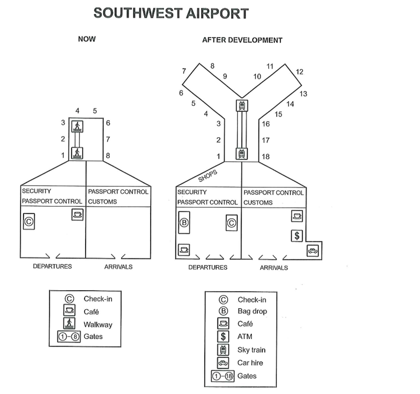

WRITING | TASK 1
Time Remaining: 60:00
Writing Task 1
You should spend about 20 minutes on this task.
The plans below show the site of Southwest Airport now and how it will look after redevelopment next year.
Summarise the information by selecting and reporting the main features, and make comparisons where relevant.
Write at least 150 words.

© IELTS Sample Material